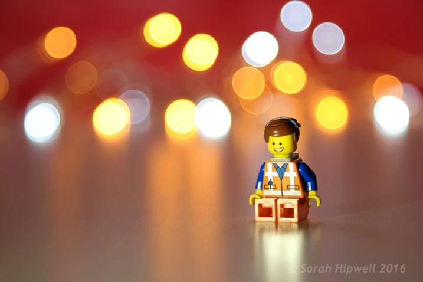
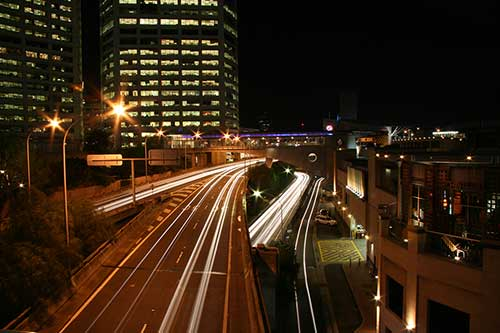

ISO, Aperture and Shutter Speed!
ISO, Aperture and Shutter Speed are three setting that together control the lighting and other technical aspects of a photo. Knowing what all three do is important to taking better photos.
ISO
ISO defines the sensitivity of your photosensor. The higher the ISO, the more sensitive the photosensor, and thus the brighter the photo will be. The ISO is a great way to brighten photos when there low light. However, “noise,” which is an often unappealing grain pattern on the photo, is usually created with higher ISO levels.
Aperture
Aperture controls the amount of light that your lens allows into the camera. The lower the “F” number, the larger of amount of light is let onto the image sensor. The lowest “F” is determined by the lens that is attached to the camera. Some lenses go as low as F1.1 which is an exceptional amount of light. The lower the aperture, the lower the depth of field. Depth of field is how much of the image is in focus. This means that you can create effects such as “bokeh” where the background looks soft and blurred and allows the focus to be on the subject.
Shutter Speed
Shutter speed is the measure of how long the shutter exposes the photo sensor to light. The lower the shutter speed, the less light is let onto the photosensor. Shutter speed can also affect how blurred an image appears to be; a slow shutter can mean that unless the camera is on a tripod, it will show some visible blur due to the movement of the human hand. A slow shutter on a tripod can create an interesting effect for lights because if they are moving, it can create interesting lines in your image as illustrated in the example above.